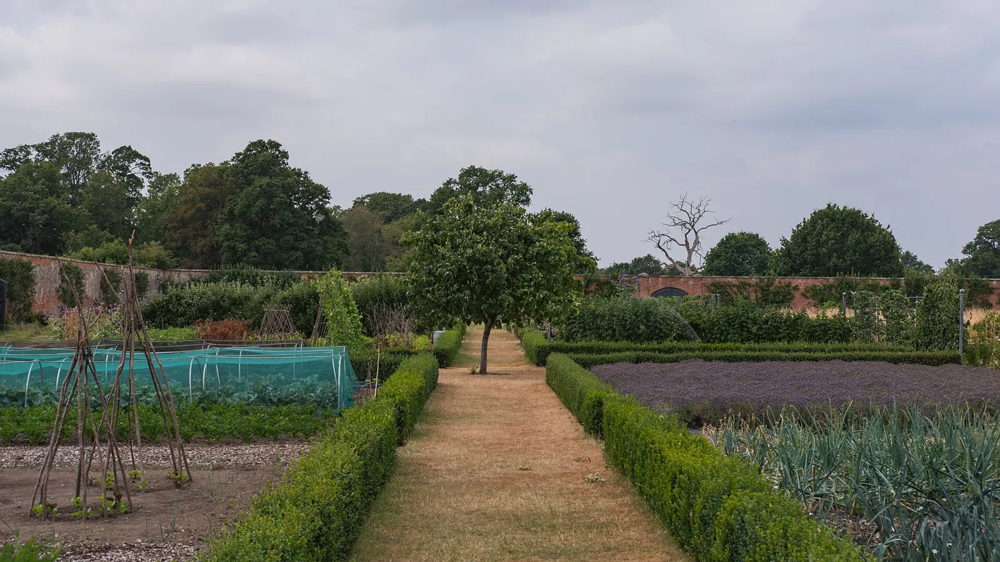

Cómo controlar las malezas, y el folclore sobre malezas que no funciona
Dos hábitos le ganan a todo: no dejes nunca que una maleza suelte semilla y mantén el suelo cubierto. Las capas de acolchado, el azadón superficial, el mito del vinagre y las malezas que plantas tú.

Foto: Christian David · CC BY-SA 4.0, vía Wikimedia Commons.
Qué necesitas
Un azadón afilado, usado a poca profundidad, y diez minutos a la semana mientras las malezas son diminutas
Acolchado (paja, hojas, astillas de madera o una cubierta viva)
Mano dura con las flores, porque una maleza que suelta semilla gana los próximos cinco años
La mayor parte del control de malezas se reduce a dos hábitos: no dejes nunca que una maleza suelte semilla, y mantén el suelo cubierto para que las semillas que ya están ahí no puedan arrancar. Todo lo demás, desde la técnica del azadón hasta el grosor del acolchado y los aerosoles del folclore, depende de esos dos y no los puede reemplazar.
¿Cuál es la diferencia entre las malezas anuales y las perennes?
Las malezas se dividen en dos grupos que piden tratamientos opuestos, y confundir contra cuál estás peleando te hace perder la temporada.
Las anuales, como el quelite cenizo, la verdolaga y la garranchuela, viven solo de la semilla. Todo suelo de huerto ya guarda un banco profundo de semillas, formado durante años en que se dejó florecer una maleza aquí y otra allá. No puedes vaciar el banco. Sí puedes dejar de hacer depósitos (nada florece, nunca) y dejar de ponerle fácil los retiros (cubre la superficie y remueve el suelo a poca profundidad, para que la semilla enterrada siga enterrada y a oscuras).
Las perennes, como la grama del norte, la correhuela y el cardo cundidor, viven de sus raíces. Si pones acolchado encima de un sistema de raíces perennes vivo, salen a través de él. La guía de extensión lo dice sin rodeos: a menos que las perennes hayan desaparecido de verdad, van a seguir saliendo en una cama nueva. Sácalas primero, con todo y su sistema de raíces, y trata cada brote que vuelva a salir como un retiro de las reservas de la raíz. Aquí gana la constancia. No hay atajo ingenioso.
¿Cómo evito que salgan malezas?
El acolchado bloquea la luz en la superficie del suelo, así que las semillas de maleza no pueden arrancar y las plántulas pequeñas se asfixian. El grosor importa, y las cifras de extensión son precisas:
Astillas de madera, hojas trituradas y la mayoría de los acolchados orgánicos: unos 8 cm3 pulgadas.
Paja y heno: más grueso, 10-15 cm4 a 6 pulgadas, porque se asientan.
Junto a cultivos bajos como la lechuga y el rábano: una capa más ligera de 4-5 cm1½ a 2 pulgadas para que el acolchado no se trague la hilera.
Hay tres precauciones. El heno trae su propia semilla de maleza, así que la paja es mejor que el heno cuando puedes elegir. No acolches con recortes de un césped tratado hace poco con herbicida. La guía de composta explica a fondo esa advertencia sobre residuos. Y espera a poner acolchado orgánico hasta que el suelo se haya calentado a principios del verano. En un suelo frío de primavera mantiene el frío pegado a los cultivos a los que se supone que ayuda.
También hay un acolchado que se planta, y es la única herramienta contra malezas del corpus que tiene calificación:
El acolchado vivo suprime la maleza y conserva la humedad del suelo.
Si no lo sigues, aun así crece, solo que peor. El planificador lo sugiere.
Cómo funciona: Una cubierta viva mantiene un dosel de hojas sobre el suelo. Intercepta la luz en la superficie del suelo, así que las plántulas de maleza quedan a la sombra antes de establecerse, y frena la evaporación superficial, así que el suelo retiene más agua. En una siembra de las Tres Hermanas este es el papel de la calabaza. Sus hojas anchas dan sombra a la cama.
Evidencia: cotejada con 2 fuentes en la literatura basada en investigación.
Una cubierta viva baja, como el trébol bajo cultivos más altos o un cultivo de cobertura fuera de temporada, bloquea la luz de la misma manera y además alimenta la tierra.
¿Cuál es la forma correcta de usar el azadón y de arrancar?
Para las malezas anuales, el azadón le gana a la mano, con dos condiciones en las que la guía de extensión es cuidadosa. Úsalo a poca profundidad, un raspado ligero que corta las plántulas en la superficie. Si cavas hondo, dañas las raíces de tus hortalizas y subes a la luz una nueva carga de semilla de maleza enterrada. Y úsalo a tiempo, cuando las malezas están en la etapa de hilito blanco, demasiado pequeñas para arrancarlas a mano y más fáciles de matar. Diez minutos tranquilos a la semana en ese momento te ahorran un agosto de sufrimiento.
Arrancar a mano sigue teniendo su lugar para las perennes (saca la raíz entera) y para cualquier cosa que creció grande junto al tallo de un cultivo, donde el azadón no llega. La única regla sin excepciones vale la pena repetirla, porque es toda la estrategia del banco de semillas. Nada florece. A una maleza que hoy no tienes tiempo de arrancar igual le puedes quitar la flor al pasar.
¿De verdad funcionan el vinagre, el agua hirviendo o la sal?
El folclore sobre malezas sigue el mismo patrón que el resto de la sección de folclore. Un efecto real y limitado se infla hasta volverse una cura general. El corpus revisó el más popular:
El vinagre solo quema las partes de una maleza que toca, así que funciona en plántulas diminutas, pero las malezas más grandes y las perennes vuelven a crecer desde la raíz. También daña cualquier planta a la que le cae, cultivos incluidos. Los tipos fuertes de "uso hortícola" pueden quemar la piel y los ojos. Úsalo para plántulas en las grietas del pavimento. No es un herbicida para el huerto.
Lo que se sabe
El vinagre de casa tiene alrededor de 5% de ácido acético, un herbicida de contacto. Quema solo las partes de la planta que toca, más rápido con sol fuerte, y controla muy bien las malezas anuales de hoja ancha muy pequeñas. No llega a las raíces, así que las malezas más grandes y las perennes pueden volver a crecer más o menos una semana después, y no es selectivo: daña cualquier planta sobre la que cae. Los productos más fuertes son más peligrosos para quien los usa. Con 11% de ácido acético o más, el vinagre puede quemar la piel y causar lesiones graves en los ojos, y las fórmulas de 20-30% piden equipo de protección. Es más útil para malezas en la grava, los patios y las banquetas. No es un herbicida de uso general.
Excellent control when contacting very small annual broadleaf weeds
El agua hirviendo y los quemadores de malezas tienen el mismo perfil que el vinagre: un daño real a la parte aérea pequeña, nada a una raíz establecida, y ningún efecto sobre el banco de semillas que espera debajo. Este sitio web no hace recomendaciones de herbicidas. Cerca de cultivos de comer, hasta los comunes matan las hortalizas con la misma facilidad que las malezas, y quien elija ese camino tiene que seguir la etiqueta. La pareja de acolchado y azadón de arriba es más barata, y su efecto se acumula.
¿Qué malezas plantan los hortelanos a propósito?
Algunas de las malezas más difíciles de un huerto llegaron en una maceta, a propósito, con recibo. El corpus califica dos de ellas:
Mantén la menta contenida. Suelta en una cama, lo invade todo
Si no lo sigues, aun así crece, solo que peor. El planificador lo sugiere.
Cómo funciona: Propagación por rizomas, y también por estolones. Los tallos subterráneos horizontales de la menta (rizomas) y sus estolones superficiales echan raíces en sus nudos y producen brotes nuevos, así que una planta sin confinar se expande hacia afuera desde la corona cada temporada y reaparece dondequiera que un nudo llegue al suelo. Este avance vegetativo es la razón por la que una plantación suelta se apodera de una cama, y la razón por la que el control es una barrera física en el suelo. El espaciado no la contiene.
Evidencia: cotejada con 2 fuentes en la literatura basada en investigación.
Mint spreads quickly in open garden areas and will out-compete most garden plants
Solución
Cultiva la menta en un contenedor sobre el suelo, o plántala en una maceta grande sin fondo o en un borde enterrado en la cama (unas 3-4 pulgadas por encima del suelo y 10-15 pulgadas por debajo), para que los rizomas que se escapen tengan que subir por encima del borde, donde se ven. Recórtala y cosecha durante toda la temporada, y arranca cualquier estolón que pase la barrera antes de que eche raíces.
El bálsamo de limón se resiembra solo con facilidad y, si se deja florecer y formar semilla sin control, se extiende y puede apoderarse de una cama. Recorta o quita las varas florales antes de que formen semilla para mantenerlo a raya, o cultívalo en un contenedor. Se resiembra mucho y puede volverse maleza, aunque no figura en las listas de especies invasoras.
Si no lo sigues, aun así crece, solo que peor. El planificador lo sugiere.
Cómo funciona: La propagación es principalmente por semilla que se siembra sola. Una planta que se deja florecer produce semilla abundante que cae y germina en el lugar, así que reaparece y se expande de un año a otro. Quitar las varas florales antes de que se forme la semilla rompe ese ciclo. Se propaga por semilla. No viaja por los tallos subterráneos rastreros con los que se extiende su pariente, la menta, aunque una planta cultivada en el suelo también puede avanzar un poco por sus orillas.
Evidencia: cotejada con 2 fuentes en la literatura basada en investigación.
While mint can spread rapidly by underground stems, lemon balm spreads by setting lots of seed and can, if allowed to go unchecked start to overtake the garden
Lemon balm, like mint spreads rapidly (becomes weedy) and can take over an herb bed
Solución
Poda o quita las varas florales antes de que formen semilla, y arranca las plántulas que salgan solas mientras sean jóvenes. Cultívalo en un contenedor para contenerlo; en una planta cultivada en el suelo, cortar alrededor de las orillas de la planta frena su modesto avance por los bordes. Una variedad de flores estériles no produce semilla viable y no se resiembra sola.
El patrón se generaliza: cualquier cosa que se venda con las palabras “cubresuelos vigoroso” merece una maceta, una barrera o una decisión muy pensada. Es mucho más fácil evitar esa maleza al plantar que desalojarla en el tercer año, y esa es toda esta guía en una frase.
Para leer más
Buenos lugares para leer más sobre la técnica de esta página. La calificación de cada tarjeta viene de las fuentes de esa misma tarjeta.